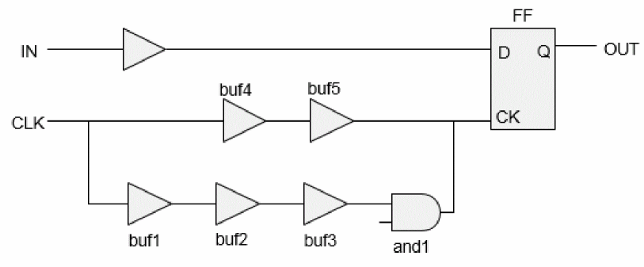

Parallel Arcs in ETM
If a model is extracted in the BC-WC or OCV mode, then timing is handled using the early and late path analysis (as done with the report_timing command).
Consider the following design:
Figure -8 Parallel arcs in ETM

In the above design there are two paths CLK->IN (check path) and CLK->OUT (sequential path).
Here, the check (setup) path will be captured by the early path of clock (CLK->buf4->buf5->FF/CK). But the sequential path will be using the late clock path (CLK->buf1->buf2->buf3->and1->FF/CK). The extraction of early/late attributes is differentiated through the min_delay_arc attribute. So, in the extracted model for combinational/trigger/latency arc, both the rise/fall maximum and minimum arcs exist.
Return to top